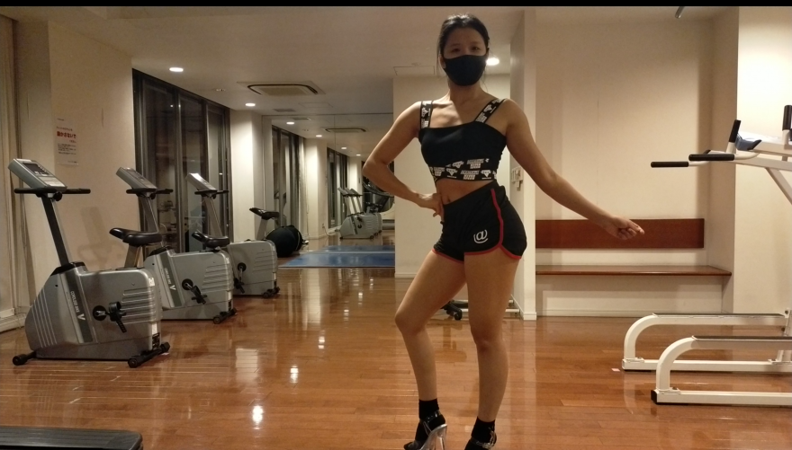
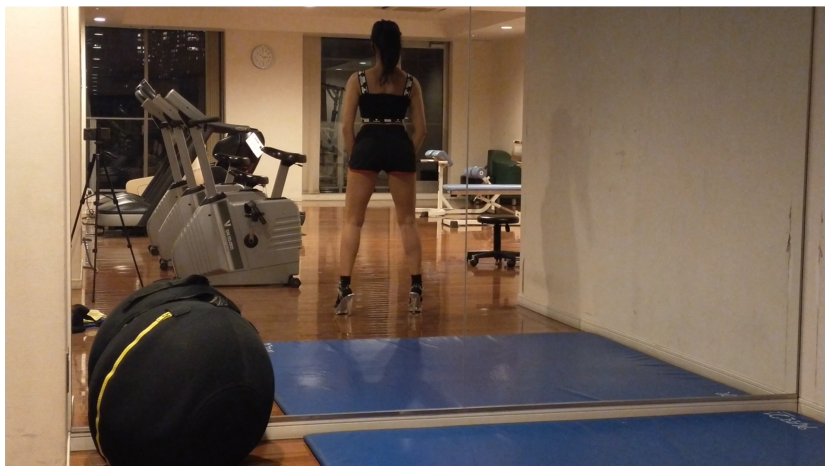
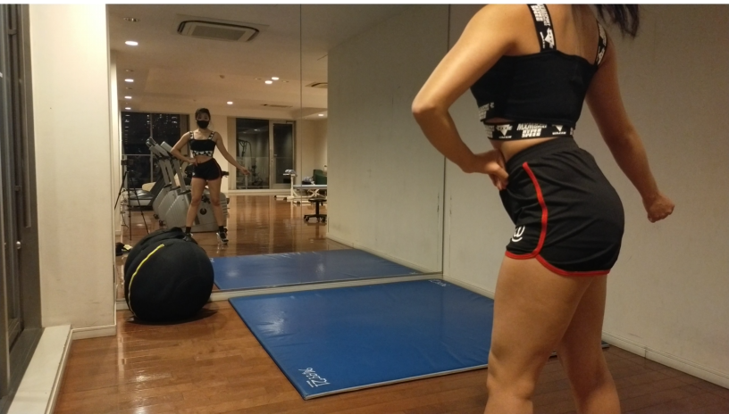
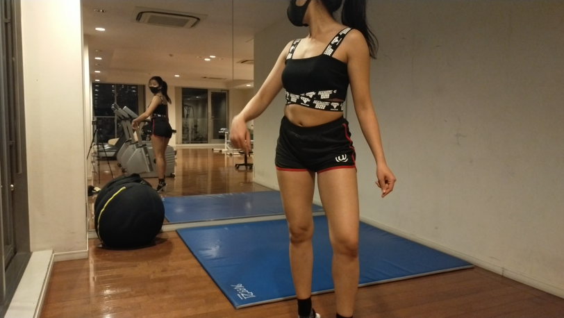
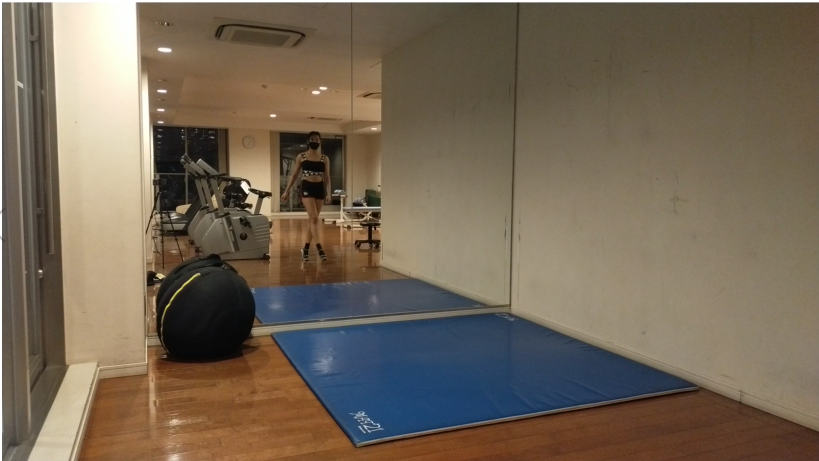

はじめて鏡をみずに動画を撮影した日
トップへ戻る| ポーズ | ポイント | 画像 |
|---|---|---|
| オープン | ・特に左軸のときに上半身が軸に乗っていない ・肩を開く ・軸足をまっすぐにする |
 |
| バック |
・足を開きすぎている。膝から下は地面に対して垂直にする。 ・肘の開きがこぶし1個分より小さい。 |
 |
| ローテーション |
・体は真ん中の軸の上にのせる ・右足を真っ直ぐに見えるようにする |
 |
| ワンターン | 後から置く足の先は軸足の先より少し下げることでターンしたときに足が1本に見えるようになる。 |  |
| ウォーキング |
・たんでんに力をいれて上半身は固定する ・肩を開く |
 |